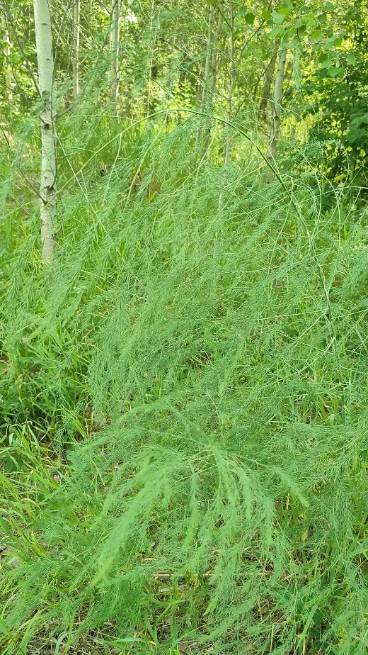

Wild asparagus
Wild asparagus is a root or shoot you can forage from May to July in Ontario, Quebec, Prairies and British Columbia. Escaped spears along ditches and fence lines; easiest found by last year's tall, feathery dead stalks.

When is wild asparagus in season in Canada?
Wild asparagus is usually in season May to July. Timing shifts with weather, latitude and altitude.
Where does wild asparagus grow in Canada?
Wild asparagus grows in Alberta, British Columbia, Manitoba, Ontario, Quebec, Saskatchewan. Regions: Ontario, Quebec, Prairies, British Columbia.
How do you recognise wild asparagus?
Escaped spears along ditches and fence lines; easiest found by last year's tall, feathery dead stalks.
How do you harvest wild asparagus?
Only dig roots where you have the landowner's permission, since uprooting wild plants is illegal in many places. Take a few from a large patch and backfill the hole.
How do you eat wild asparagus?
Grill, steam or roast like garden asparagus.
How do you store wild asparagus?
Blanch and freeze, or pickle.
What is wild asparagus good for?
Vitamin A, Vitamin C.